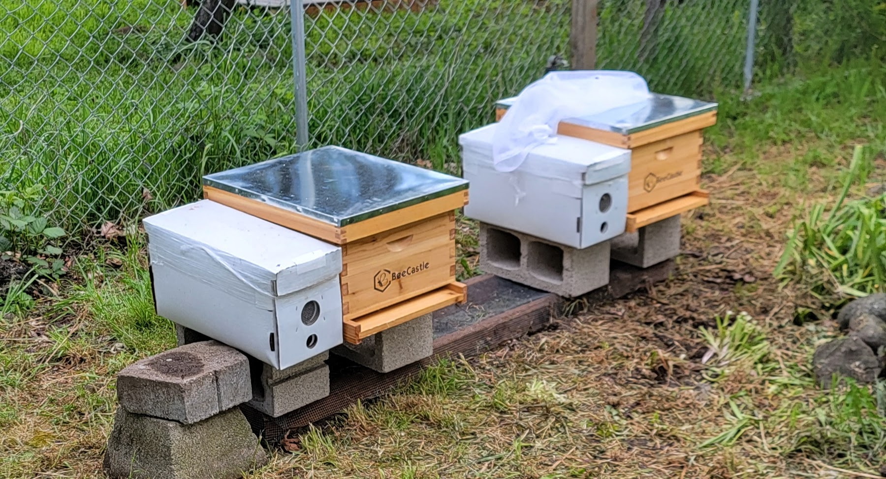
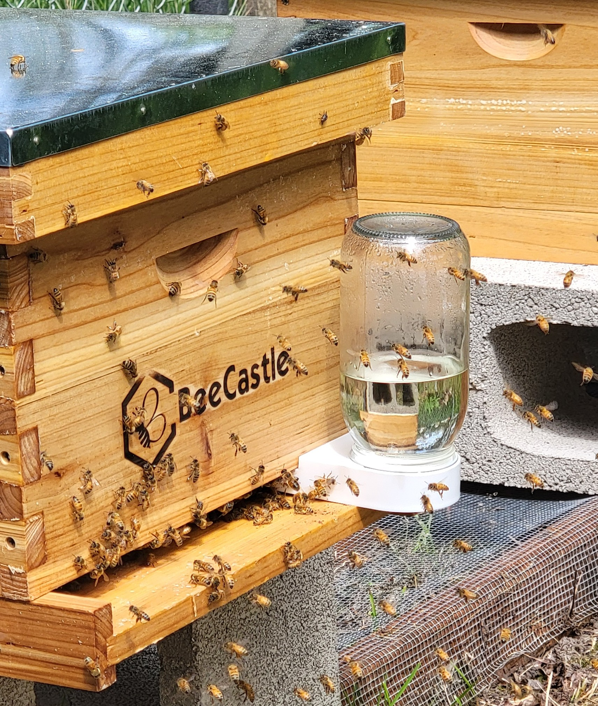
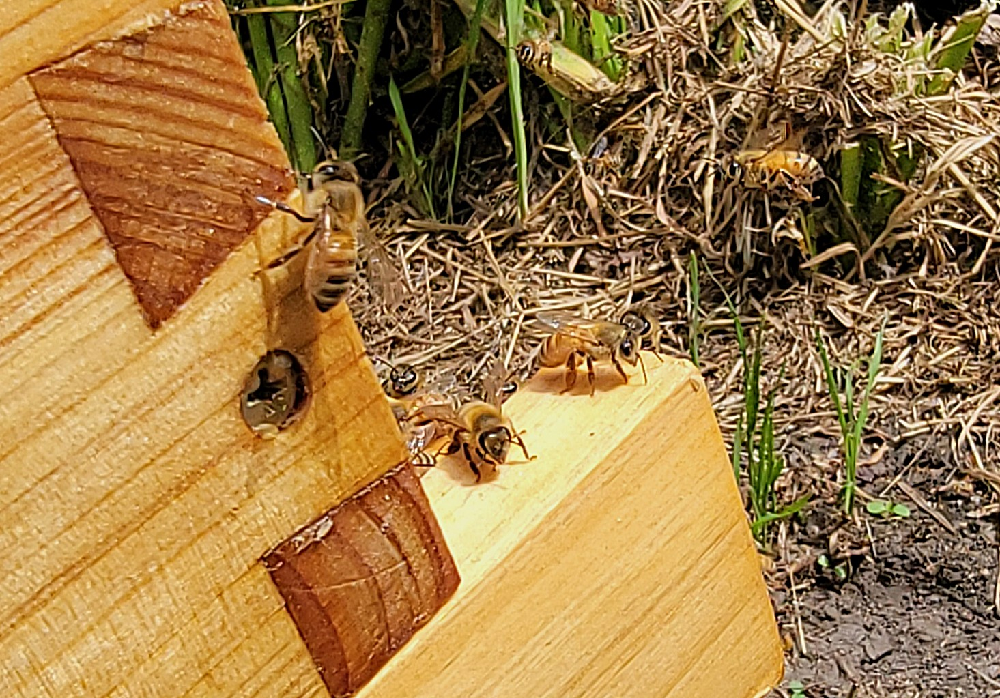
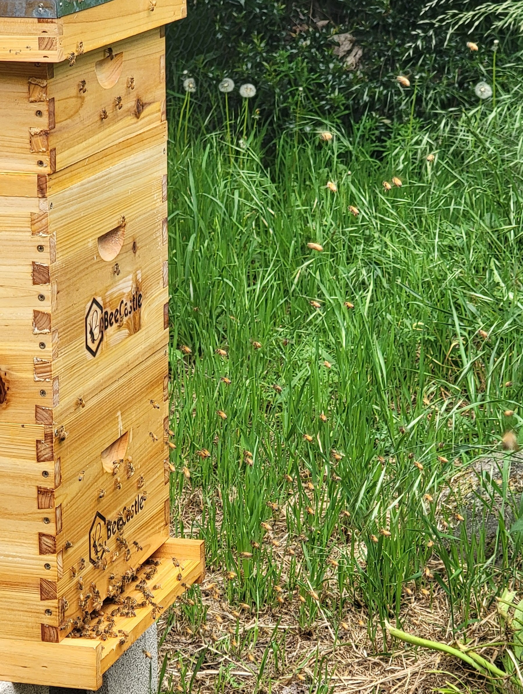
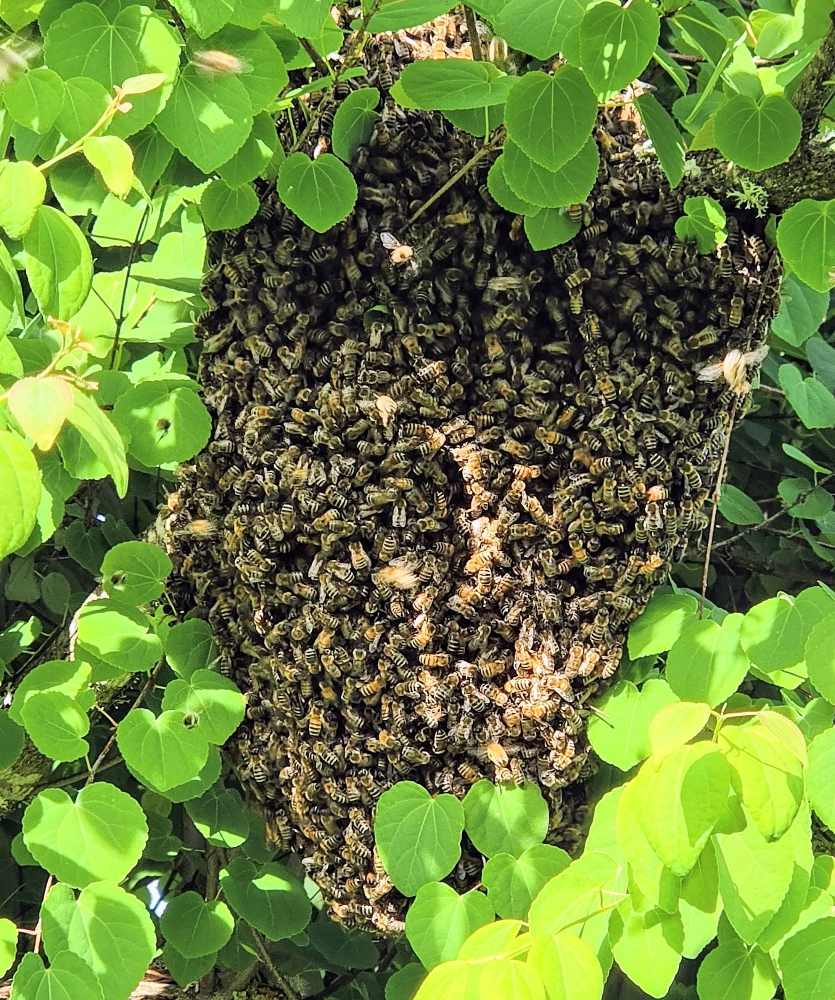
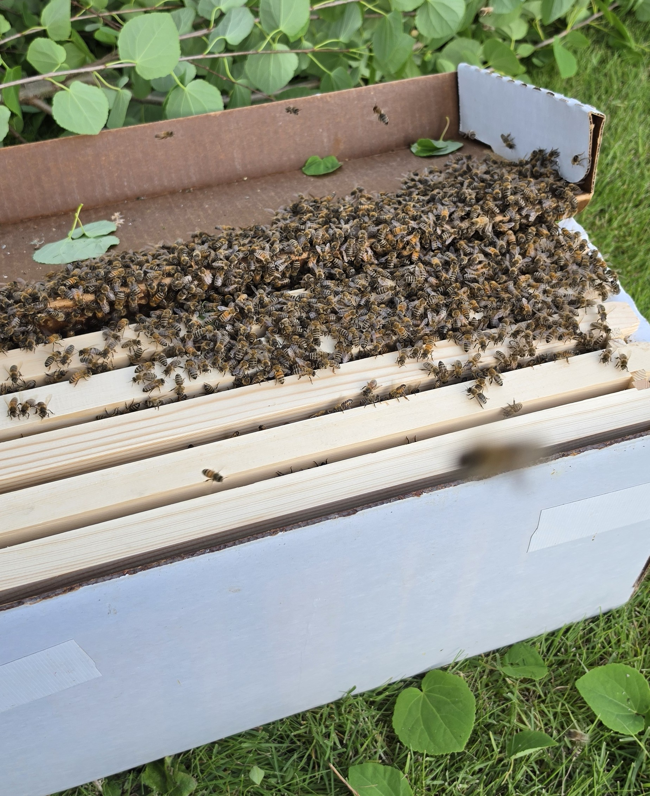
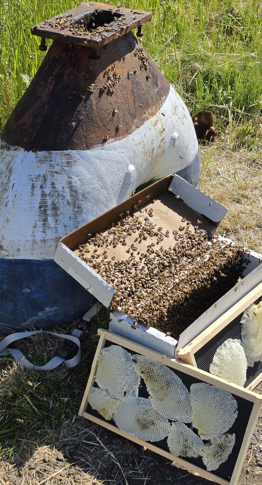
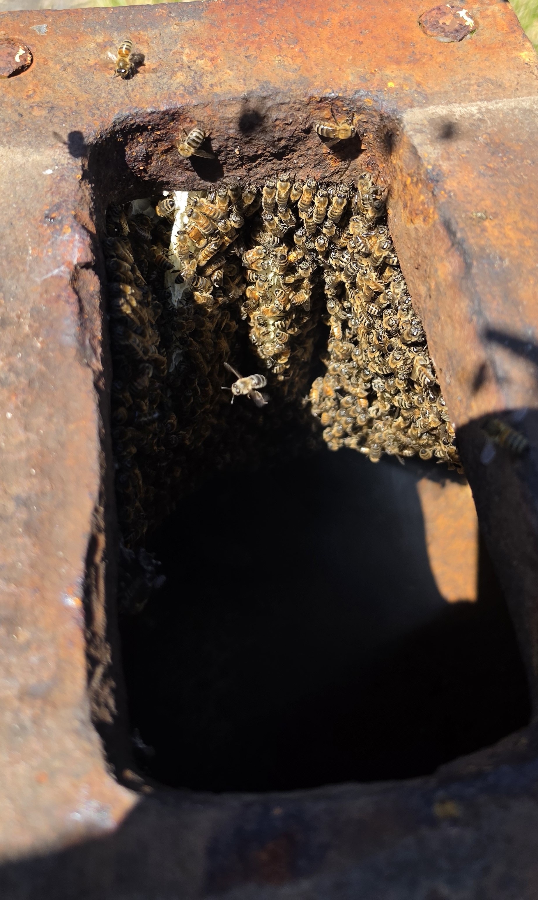

Our Apiary
Every Colony Has a Story
Every colony teaches something different. From founding nucs to swarm recoveries, these bees have helped shape HoneyTide and my beekeeping journey.
2026
Established
4
Featured Colonies
2
Featured Recoveries
2
Founding Colonies
The Beginning
One Colony at a Time
Introducing the bees behind HoneyTide! I started this apiary with a small number of colonies, a lot to learn, and a steady respect for the bees.

Zion and Tortooga arrived as HoneyTide's first nucleus colonies in spring 2026. From that starting point, the apiary began to grow through hands-on learning, careful observation, and the unexpected opportunities that come with swarm season.

Zion
The Colony That Started It All
Zion arrived as one of HoneyTide's founding colonies and quickly demonstrated exceptional strength and vigor. The beekeeper who prepared the nuc described the colony as strong and advised moving them into a larger hive as soon as they arrived home.
From the beginning, they showed steady expansion, strong brood production, active foraging, and confident colony growth. As one of HoneyTide's strongest early hives, they've become a benchmark colony and an important teacher in understanding what a healthy, expanding hive can accomplish when given space, resources, and careful stewardship.


Tortooga
Growing at Its Own Pace
Tortooga arrived alongside Zion as one of HoneyTide's original colonies. While not developing with the same explosive growth as its sister colony, Tortooga has offered lessons of a different kind.
Through periods of slower development, careful monitoring, and changing colony needs, Tortooga has taught the importance of patience, observation, and responding to what the bees are actually showing. Every hive grows in its own rhythm, and Tortooga continues to show that stewardship is not about forcing growth, but understanding it.


Butera
HoneyTide's First Swarm Capture
Butera became HoneyTide's first successful swarm capture. Named after the family whose property hosted the swarm, they represent one of the earliest moments where the apiary was able to preserve a wild colony and give it a managed home.
What began as a cluster of bees gathered in a tree became an opportunity to learn, respond, and grow. Butera is a reminder that beekeeping often begins by paying attention when nature presents an opening.


The Anchor Colony
A Rescue from an Unusual Home
The Anchor Colony was one of the most unusual recoveries. Originally discovered living inside a mailbox anchor, the bees had transformed an unexpected space into a functioning home.
Their relocation required patience, careful observation, and a willingness to adapt. The experience reinforced a simple lesson: honey bees are remarkably resilient, and colony preservation should be prioritized whenever possible.
Looking Ahead
The Future of HoneyTide
As the apiary grows, I’m focused on responsible colony management, pollinator education, swarm awareness, and staying connected with Oregon's beekeeping community.
I want to strengthen the colonies, support pollinator awareness throughout Lane County, continue learning through the OSU Master Beekeeper Apprentice Program, and share seasonal updates from the apiary.